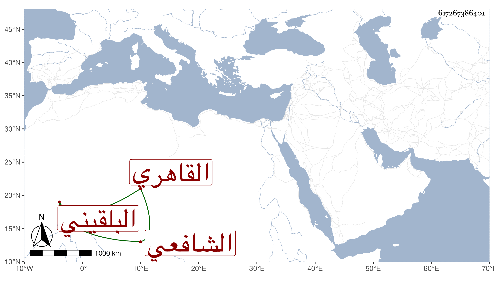

0902Sakhawi.DawLamic.ITO20230111-ara1.EIS1600.617267386401
Biography ID: 617267386401
132
محمد بن أحمد بن محمد بن عبد الرحمن بن عمر بن رسلان البدر بن الشهاب ابن التاج بن الجلال بن السراج البلقيني الأصل القاهري الشافعي والد عبد الباسط الماضي وإبراهيم . ولد في ذي القعدة سنة أربع وثلاثين وثمانمائة بجوار مدرسة جده السراج بحارة بهاء الدين ، ونشأ بين أبويه فحفظ القرآن والعمدة وألفية العراقي والمنهاج الفرعي وابن الحاجب الأصلي والتوضيح لابن هشام والتلخيص للقزويني وكان يصحح بعضها على الشمني وبعضها على العز عبد السلام البغدادي ، وعرض على شيخنا وغيره وأخذ الفقه عن السيد النسابة والعلاء القلقشندي والمحلى والمناوي وعم جده العلمي وعمه أبي السعادات وبعضهم في الأخذ أكثر من بعض وكذا عن الزين البوتيجي وقابل معه نصف النكت لشيخه الولي العراقي وعنه وعن أبي الجود أخذ الفرائض وأخذ في العربية عن ابن خضر بمرافقتي وعن الأبدي والعز عبد السلام وفي أوصل الفقه عن ابن حسان والتقي الحصني وأخذ في هذه العلوم وفي غيرها عن غير هؤلاء ، وأذن له عم جده في الإفتاء والتدريس بل ناب عنه وعن من بعده وتصدى لذلك مقبلا عليه بكليته ولذا تميز في الشروط مع المداومة على الكتابة بحيث كتب فتح الباري مرتين والخادم والتوسط وإعراب السمين ونحو مائة مجلد وخطه ليس بالطائل وصار يستحضر من كتابته كثيرا سيما الفقه وكثيرا ما كان يراجع في الجلال البكري ، وأكثر من الحضور عن الصلاح المكيني والخيضري وكذا تردد إلى كثيرا وراجعني في أشياء واستعان بي عند المناوى وغيره ودرس بالآثار برغبة أبيه به عنه وعمل فيه اجلاسا بحضرة عم جده تكلم فيه على بعض الآيات وكذا بجامع أصلم نيابة عن ولدي التقي بن الرسام وبالظاهرية القديمة نيابة عن أبي اليسر بن النقاش وقرر بعد عمه أبي السعادات في وقف طقطجي وغيره مما ليس فيه كبير أمر وحرم مع أحقيته من جميع من أخذ ، وحج في سنة ست وثمانين وكان على قضاء المحمل ولم يتأنق في ملبسه ولا مأكله ولا كان يركب إلا نادرا مع يبس وإقبال على شأنه ونسبة لتسامح وابتلاء بأم أولاده إلى أن تعلل أياما ثم مات في ليلة ثامن جمادى الأولى سنة اثنتين وتسعين وصلى عليه بجامع الحاكم ثم دفن عن أبيه بمدرسة جده رحمه الله وإيانا .
